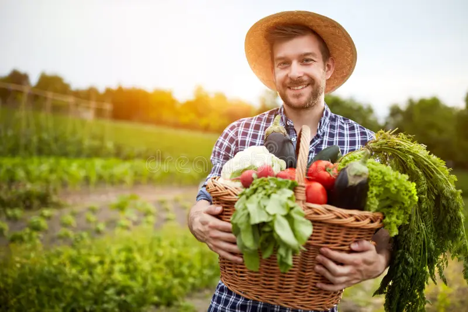

It all started in 2020 in a Pandemic time, when finding fresh produce foods is hard to find, especially to an area with limited access to market. This experience sparked a passion to find a better solution. We knew flash-freezing offered a way to lock in freshness, reduce waste, and make healthy eating more accessible. That's when Molejon's Affordable Flash Frozen Products was born. We started by buying fresh fruits and vegetables, driven by the belief that everyone deserves delicious, nutritious meals without breaking the bank. Since then, we've grown to offer a wider variety of flash-frozen products, partner with specific stores. Our journey continues, and we're constantly looking for ways to expand product offerings, reduce environmental impact. We're proud to be a part of making healthy eating convenient and affordable for everyone.
Affordable Flash Frozen Products
Making healthy eating accessible to everyone. Reducing food waste, one delicious meal at a time. Bringing the convenience of frozen to the quality of fresh, without breaking the bank. Unlocking the goodness of frozen food. Saving you money, not flavor.

History

Adventure Awaits You!